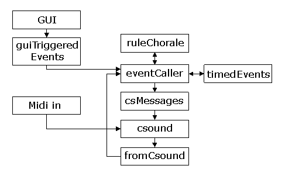

Introduction
The purpose of this article is to describe an example application where some key concepts discussed in the previous article, "A sound server approach to programming in Csound" (Brandtsegg 2005), are implemented. The application will also show the use of an approach to algorithmic composition suited for realtime use. For clarity, the example application has been simplified as much as possible, emphasizing the most important module types and the communication between them. Obviously, not every function of the application is commented on in the article, and a better understanding of the topic presented can be gained by reading both the article and the provided code, as well as running the example application and experimenting with the controls found therein.The example application is a simplified version of a system under development as part of an ongoing research project. The research project has the title "New artistic potential by improvisational application of compositional techniques, a new computer instrument for performing musicians". The research project is part of the Norwegian research program for artistic development work. .
Overview
The application consists of an algorithmic process generating melodic and rhythmic material, an event control module with a timed queue, and a Csound module to which events are sent for audio playback. The programming language Python is used to implement the algorithmic process and event generation, and Csound is used as an audio synthesis module within Python. Communication between the Python host and the Csound module is done via the Csound Application Programming Interface. All communication of this type is done via calls to a separate module (csMessages) in the example application. This should provide for an easy separation of the application into client and server parts at a later stage. A similar separation could be done between the graphical user interface and the rest of the application, but also the compositional algorithms might be separated into a module running on a dedicated computer. If some of the modules prove to be computationally resource demanding during later development, such separation should be done where needed.
In the following sections, I will explain briefly the modules of the example application. The header for each section is followed by one or several file names where the code representing the functionality discussed in that section can be found. But first a few words about different possible strategies for implementing realtime composition algorithms.
Realtime composition implementation strategies
Even if the details of the algorithmic process is not the main focus of this article, some description of it's workings is appropriate because it reflects a general principle in algorithmic composition that seems promising for realtime interaction between composer and algorithm. This is the focus of the author's current work, and one of the main incentives for writing this example application.
The main concept of this interactivity is to let an automatic process generate some music, and to give the composer/performer some means of changing the music as a response to what he hears being played.
Two of the basic approaches to automatic composition are represented by rules based and database driven composition systems. Rules based systems can be built on rules derived from traditional music theory, e.g. "avoid parallel fifths", while database driven systems can be based on an analysis and recombination of existing works, e.g. via Markov models. Each of these approaches has a distinct set of pros and cons. The most prominent limitation of rules based systems is that a large number of rules have to be specified for every conceivable musical situation, let alone exceptions to rules in specific musical situations. Database driven systems, on the other hand, do often rely on a large database to avoid producing material too similar to the analyzed works in the database. A further limitation of strictly database driven systems is that there is no inherent control for shaping the generated result to taste. One of the nice aspects of rules based systems is that the rules can be changed, and hence the generated result can be shaped according to the composer's intent. Similarly, a good thing about database driven systems is that they are capable of producing very convincing musical passages in a style reminiscent of the style represented in the database.
A historical example of a database driven system is the "Musikalisches Würfelspiel" (Musical Dice Game), attributed to W.A.Mozart but seemingly a well known and widely used concept of 18th century algorithmic composition (Peterson 2001). A contemporary and computer based database driven system is exemplified by David Cope's "Experiments in Musical Intelligence" (Cope 2001). Without going in too much detail Cope's system can broadly be described as a Markovian analysis and recombination tool on several simultaneous levels of musical structure. A historical example of a rules based system is the canon as a strict form of imitation, widely used from the 15th century (Grout 1996). Further on, the serially based works of A.Schoenberg from 1910 onwards could be viewed as an algorithmic and rules based compositional approach. More recent examples of applying traditional rules for computer generated composition can be seen in "Gradus" (Cope 2004), "Choral" (Ebcioglu 1987), and "Automatic Counterpoint" (Schottstaedt 1991).
My assumption is that when a human composer works with a set of materials, he applies rules consciously or unconsciously. The weighing of several rules towards each other is a crucial part of the process, as no rule represents an absolute truth. Different rules may even be in conflict with each other. To simulate this in an automatic composition process, it might be appropriate to consider a pool-rule approach, where the pool represents the musical source material and the rules represent ways of choosing among the possibilities the source lends. The pool could e.g. be generated by a Markovian analysis of a limited database, by a purely mathematic generative algorithm, or by a manually edited set of source materials. With a limited pool size, one could also say that some rules are inherent in the source material. The use of weighted rules in this context was inspired by the concept of Fuzzy Logic (e.g. McNeill and Freiberger 1993, Elsea 1995), but is not currently implemented using standard Fuzzy Logic techniques.
A simplified view of the pool-rule process, numbers representing each candidate’s score
The modules of the application
The following sections describe some details about the modules and architecture of the application.
A simple view of the modules
Algorithmic Process
(ruleChorale.py)The ruleChorale module is based on an interval series (the pool) and some simple rules for creating polyphonic independent melodies from the series. The interval series might be updated while the music is generated, either via the GUI or via midi recording of pitch intervals. The rules affect the pitch range of the output melody, the harmonic relation between simultaneous voices, and possible permutations of the interval series. At each iteration, all possible "next intervals" are generated, each with a score derived from the permutation of the series the interval belongs to. These intervals and their score constitute the candidates of the pool. Next, the result of using each interval candidate is tested for harmonic relation to other sounding voices. A weighted set of preferred harmonic relations is then used to increase or decrease each candidate's score. After processing all rules, the candidate with the highest score is chosen as the next interval in the melody and applied to generating a new note event.
Graphical User Interface
(testGUI.py and guiTriggeredEvents.py)The GUI is implemented as a separate Python module (testGUI) and communicates with the rest of the application solely through calls to the guiTriggeredEvents module. This separation is done to facilitate the separation of the GUI from the rest of the application, in case it should become necessary to run the GUI on a separate computer communicating via a network based connection. The design of the GUI has been done to provide a demonstration of the different features of the application, more than providing an easy to use interface. An example of this is the Voice Group control (see below for an explanation of voice groups), where the user has to start each voice group separately. This is not the solution that is easiest to use, but provides a demonstration of how the voice groups work.
Midi control
(midihandling.inc and ruleChorale.orc)Midi input is routed directly to Csound, even if routines for processing midi data (filtering, splitting etc.) could have been more easily written in Python. This is done to get as low latency as possible for midi played events. It could be argued that the difference is negligible, but in any case this is the shortest signal path from midi input to audio event for manual playing. All standard midi assignment and handling in Csound is turned off (using massing statements in the orchestra header and implementing a separate midi handling instrument, found in the file "midihandling.inc"). The midi handling instrument activates an audio generating instrument when receiving a midi note on message, and turns off the same instrument when receiving a midi note off message. Simultaneous instances of the audio generating instrument are separated by using a fractional instrument number related to the midi note played, this ensures correct handling of polyphonic note on/off messages.
The midi note data is communicated to Python by using the pycall opcode in Csound, where note on and note off messages each call their own separate functions. In the example application, the only use of the midi note data within Python is to record a new interval series for the ruleChorale module.
Mapping Layer
In the previous article in this series, a separate mapping layer was described. The example application has no specific mapping layer, and the small amount of data mapping needed is built into the separate modules. A separate mapping layer will be needed when more complex algorithms and audio generators are introduced.Event Generator
(eventCaller.py, csMessages.py and timedEvents.py)The eventCaller module provides a sort of centerpiece for the application, in that it is responsible for requesting new data from the composition algorithm. It sends events to the Csound module for playback, and puts future events into a timed queue (implemented in timedEvents.py). The timedEvents module contains basic clock and tempo functions, and polls the timed queue for events periodically.
Several timed queues can coexist, each running at a separate tempo, e.g. one "clock" queue (one beat per second) and one "bpm" queue with a variable beats per minute tempo. These are instantiated in the ruleMain module.
All events that should be sent to Csound go via the csMessages module, and this module provides the point of separation if Csound needs to be run as a server application on another computer.
Voice Group, audio generator and routing
(VoiceGroup_handler.inc, VoiceGroupMixerChannel.inc, VoiceGroup_chn_init.inc and VoiceGroup_aoutChn.inc, melody_instr.inc)The concept of voice groups discussed in the previous article is implemented via the use of Csound chn channels for control and audio signals. A voice group might be thought of as a channel on a traditional mixing console, with its own aux and insert effects, output routing etc. The reason for using the name voice group instead of simply mixer channel is that the voice group is thought of as a unit representing both the audio generating instrument and the mixing channel. A voice group can also have designated audio feedback channels for modulation purposes. Several audio generating instruments might coexist within the same voice group. The audio generator instrument used in the example application is very simple and does not utilize many inputs and outputs, but an advanced instrument might very well need a large number of communication channels for audio and control signals.
An earlier design for the voice groups used Csound's ZAK channels for control and audio signals, but the introduction of chn channels has made it a lot easier to manage an unspecified number of channels. At the start of an improvised performance, you would not necessarily know how many voice groups you will need and how many control channels your audio generators might need. The chn system allows specification of channels by name, and if a channel does not exist upon writing to or reading from it (first time used), the channel is simply created.
Audio Master Section
(global_audio_out.inc, global_aux_efx.inc and globals_chnset.inc)This is simply the equivalent to the master section on a traditional mixing console, with global (aux) effects and routing of audio outputs from the system. It is implemented with chn channels, as with the voice groups.
Signal feedback
The previous article mentioned the use of signal feedback from the audio outs and back to the algorithmic composition process. This is not fully implemented in the example application, as the simple algorithmic process used does not suggest a specific need for audio feedback. However, the audio feedback channels are set up and used to display signal level as a VU meter. In the event that a compositional algorithm should be controlled, more features of the signal (e.g. frequency content) could be extracted by analysis in Python or Csound.Running the application
You need Python (2.4) and Csound (5) installed on your computer to run the application. You also will need the wxPython (2.6) GUI library. The numbers in parenthesis are the version numbers used by the author at the time of writing the application.Python is available from www.python.org
wxPython is available from www.wxpython.org
Csound is available from www.csounds.com
Selection of audio and midi devices, as well as buffer sizes and other Csound related flags is done in the .csoundrc file located in your csound5 directory. For reference, my current .csoundrc settings are: -odac16 -b40 -B80 -M8 -m0 -+rtaudio=pa --expression-opt -d -+raw_controller_mode=1
To run the application: double click the file "ruleMain.py", or type "ruleMain.py" (without the quotes) in a terminal window and hit enter.
To test the application: Press the button "voice group start" and then press the button "chorale1 start". You should hear a melody being played. For further details about using the application, refer to the next paragraph "Details of the GUI controls"
ruleChoraleExample.zip
Details of the GUI controls
The widgets (controls) in the GUI are separated into master controls, voice group controls and compositional algorithm controls. The master section provides controls for setting tempo and master level, and also has a VU meter for signal level display. Pressing the "list bus channels" button will print a list of all currently active Csound chn channels to the console.Screenshot of the GUI controls
The voice group section provides controls for starting and stopping a selected voice group, as well as setting the level and reverb send for each voice group separately. The "VoiceGroup select" spin control selects the voice group for which the other controls will be active. Upon starting a voice group, the level for this voice group will be set to the current value of the "VoiceGroup level" slider control.
The rightmost part of the GUI is devoted to controlling the compositional algorithm, that is, parameter settings for the ruleChorale module. It contains buttons for starting and stopping each voice of a five-part polyphonic melody generator, and text boxes for entering numeric values that affect different aspects of the melody. One might note that stopping voice number 1 also stops all other voices, and that it is not possible to start other voices before voice number 1 is running. Voice number 1 thus acts as a sort of master, while voice 2 to 5 can be started or stopped without affecting the generation of new notes in other voices. Also it might be noted that stopping a voice does not have immediate effect, this is due to the way that the timed queue is currently implemented. Stopping a voice merely says "after the current note, do not generate any more notes", but notes already scheduled in the timed queue will be allowed to play. Functions for searching the timed queue and removing future notes in the voice to be stopped could be implemented. Please do note that each voice in the melody is played on its own separate voice group, voice 1 plays on voice group 1, voice 2 on voice group 2 and so on. This is done solely for the purpose of demonstrating the voice group controls, and another routing scheme will most probably be used for more complex applications.
The numeric values affecting the compositional algorithm have the following effect: Interval series: this sets the intervals the melody generator will use, in the format of comma separated integers. If no other parameters affect the melody generator these intervals will be used in normal order from left to right and they will loop so that the leftmost interval will be next after the rightmost one. Following standard procedures of serial compositional techniques, this interval series might be reversed, inverted and reverse-inverted. These permutations will be used according to the score given by the weighted rules. The interval series thus give rise to the "pool of candidates" mentioned in the section of the article describing the "pool-rule" approach. All the following numeric controls govern the weighted rules that further distinguish the fitness of each candidate by giving it a score according to the rules.
Voice range: this sets the allowed range (in midi note numbers) for the generated melody. The format is comma separated integers, the first value sets the lower limit and the second value sets the higher limit of the melodic range. This affects all voices. In a more complex implementation it would be natural to use separate voice ranges for each voice in the melody generator. If the melody generator's next note falls outside the allowed voice range, the currently used interval series is inverted, mirroring the interval so that it falls within the allowed voice range. The melody generator for this voice then continues using the inverted permutation of the interval series.
Harmonic interval set: this is a set of scores for preferred harmonic relations between simultaneously sounding voices. As such, it will have no effect when only one voice is active. The format of the set is comma separated integers, each representing the score for harmonic intervals in the following order: prime, minor second, major second, minor third, major third, and so on up until major seventh. The default harmonic interval set of [0,1,1,4,4,3,0,3,4,4,1,1] thus shows a preference for using thirds and sixths, with fourths and fifths as slightly less preferred harmonic intervals. Seconds and sevenths are given low preference values, while primes (unison) and augmented fourths are given zero preference. The list of scores might also contain negative numbers. It is the actual difference in score that matters for the control of preferred harmonic intervals between different voices.
Harmonic score: this acts as a master control for the harmonic interval set, multiplying each value in the set with the master score. This also allows for bypassing the harmonic relations control entirely by setting the harmonic score to zero, or inverting the preference order of harmonic intervals by using a negative harmonic score. The allowed format is an integer or a float value.
Mutation type scorelist: this sets the preferred permutations of the (melodic) interval series. The format is comma separated integers, each representing the score of the different permutations in this order: normal, reverse, inverted, reverse-inverted. The default values thus represent a preference for using the interval series in normal order, with the least preferred permutation being reverse-inverted order.
Change mutation score: this represents a penalty score given each time a voice tries to change to another interval series permutation than the one it is currently using. The intention of this rule is to try to keep the melody using the same permutation for a while, adhering loosely to the conventions of serial compositional techniques. Without this rule, the melody generator would be more likely to keep toggling back and forth between two "good sounding harmonic intervals" according to the harmonic preference rule. The default value of minus one gives a slight preference for keeping up the currently used permutation. Positive values would encourage changing mutations whenever possible, while a value of zero bypasses this rule. The allowed format is an integer or a float value.
Record interval series: this checkbox enables or disables midi recording of a new interval series. When enabled, it will get ready to overwrite the current interval series, but it does not start to write before two midi notes are input. Two notes are needed to calculate the interval between successive notes. Further successive midi notes input to the application appends to the interval series.
Conclusion
An example application has been provided and described. The application makes use of some of the basic concept discussed in the first article in this series, "A Sound Server approach to programming in Csound". It also contains an algorithmic composition technique that draws on both database driven and rules based approaches.Thanks
A sincere thanks to the developers of Csound5 for creating the API, as this work would not have been possible without it. Also sincere thanks to David Cope, Peter Elsea and the rest of the team behind WACM 2005 for giving me a better understanding of algorithmic composition techniques.References
Brandtsegg, Ø. (2005) "A Sound Server approach to programming in Csound". Csound Journal Vol 1. Issue1. Fall 2005. http://www.csounds.com/journal/2005fall/index.htmlCope, D. (2001) Virtual Music. Cambridge, MA: MIT Press. See also http://arts.ucsc.edu/faculty/cope/experiments.htm
Cope, D. (2004)" A Musical Learning Algorithm." Computer Music Journal 28/3: 12-27
Ebcioglu, K. (1987): Report on the CHORAL Project: An Expert System for Harmonizing Four-part Chorales. Research report no. RC 12628, IBM, Thomas J. Watson Resaerch Center, Yorktown Heights, NY 10598, March 1987
Elsea, P. (1995): "Fuzzy Logic and Musikal Decisions". University of California, Santa Cruz. http://arts.ucsc.edu/EMS/Music/research/FuzzyLogicTutor/FuzzyTut.html
Grout, D.J. and Palisca, C.V. (1996), "A History of Western Music". 5th ed. W. W. Norton & Company: New York. 843 pp.
McNeill, D. and Freiberger, P. (1993) "Fuzzy Logic". Touchstone, New York.
Peterson, I. (2001) "Mozart's Melody Machine". ScienceNews Online Sept 1, 2001. http://www.sciencenews.org/articles/20010901/mathtrek.asp
Schottstaedt, W (1991), "Automatic Counterpoint", in "Current Directions in Computer Music Research" (Mathews, M.V. and Pierce, J.R.) MIT Press 1991